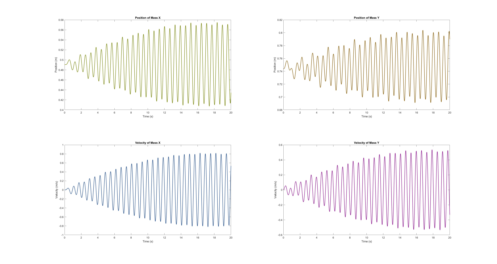
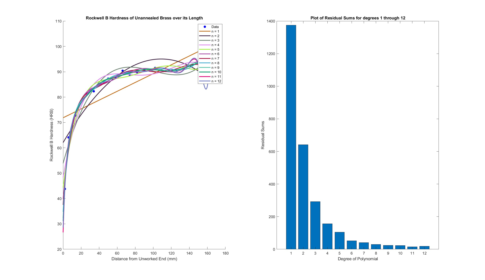
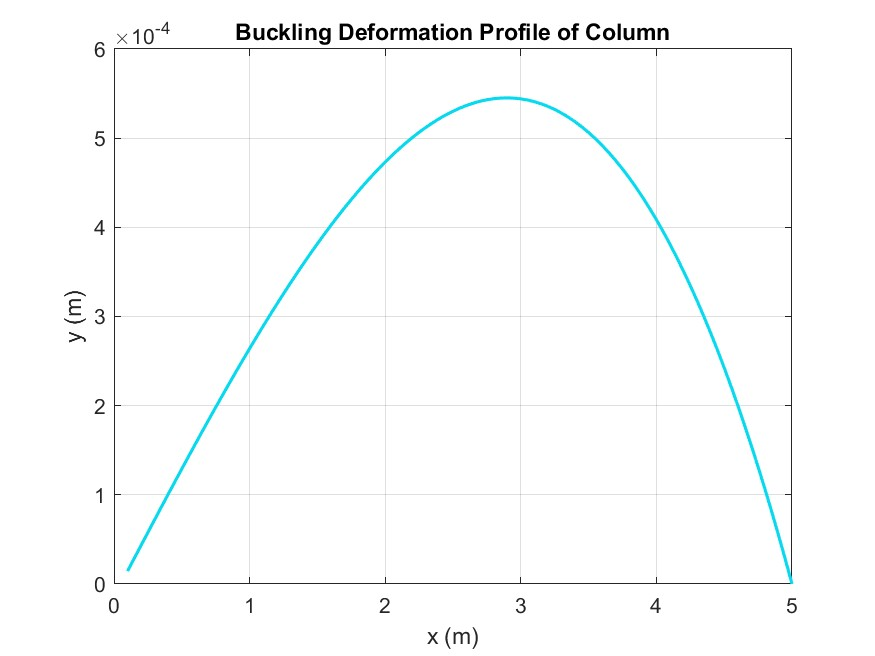
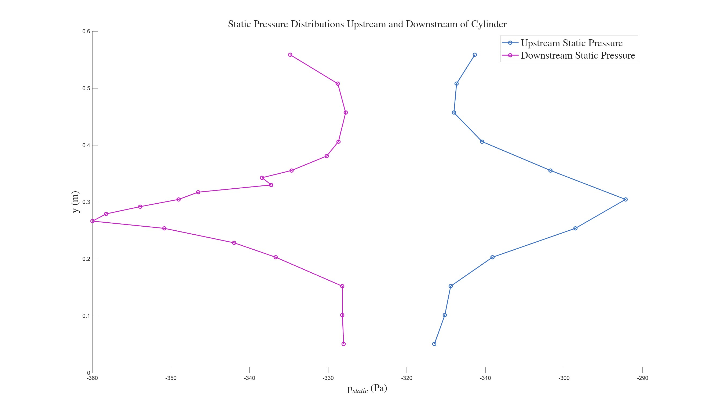
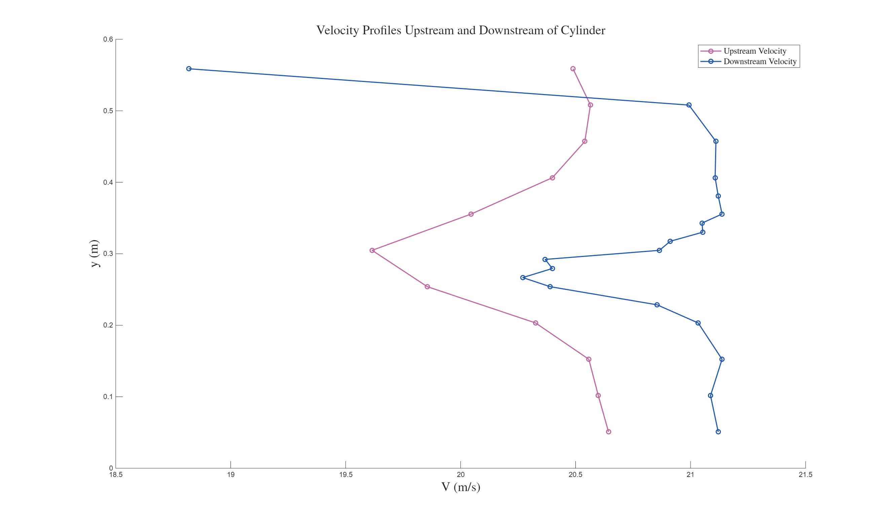
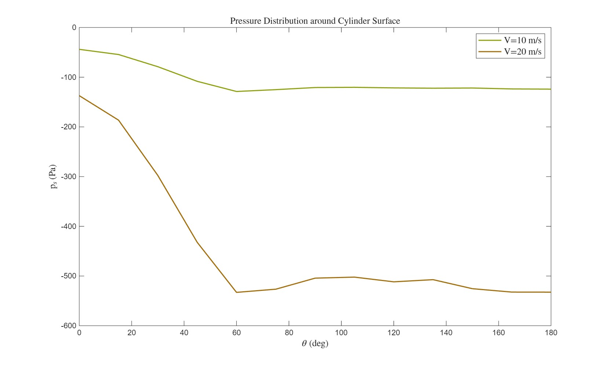
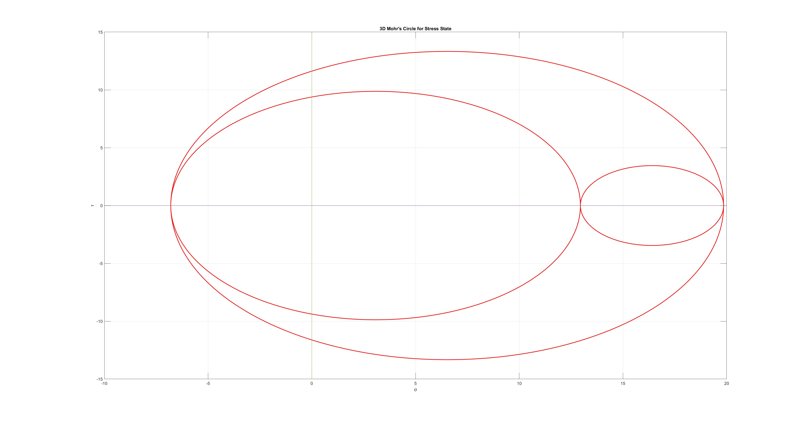

A collection of my favorite case studies in differential equations, data fitting, mechanics, and fluid dynamics.
Math has been my favorite subject since kindergarten. In elementary school, I treated every multiplication worksheet like a race and wanted to answer every question in class. In high school, I started using a whiteboard for Algebra II and never went back. That was when math became more than a class for me; it became a craft.
Differential equations are still my favorite area. The topic clicked for me while taking ME 318M (Programming and Engineering Computational Methods) with Dr. Dragan Djurdjanovic, where numerical methods were used to solve problems that are difficult to handle analytically. This page highlights a few of my favorite examples from that experience and from related projects.
Vibrations are a vital parameter in engineering design because resonance can produce excessive displacement. In this case, resonance is not achieved, but both masses still exhibit large oscillatory motion.

Time-domain positions and velocities for both masses in a coupled spring system.
I used polynomial curve fitting to interpret data from a materials engineering lab and compare fit quality across model degrees.

Hardness profile fit and residual-sum comparison used for model selection.
The boundary-value methodology for this problem closely resembles finite-element modeling in one-dimensional input spaces, which made this case especially interesting.

Calculated buckling mode shape over column length.
Observed for an average airflow velocity of 20 m/s in a 24-inch wind tunnel.

Static pressure variation along the probe traverse for upstream and downstream measurements.
Observed for an average airflow velocity of 20 m/s in a 24-inch wind tunnel.

Velocity-field comparison showing wake influence and asymmetric flow behavior.
Observed for airflow velocities of 10 m/s and 20 m/s.

Surface pressure distribution versus angle for two freestream conditions.
Example input stress state: sigma_x = 2, sigma_y = 18, sigma_z = 6, tau_xy = -4, tau_yz = 5, tau_xz = 9.
Resulting principal normal and shear stresses: sigma_1 = 19.85, sigma_2 = 12.95, sigma_3 = -6.80, tau_12 = 3.45, tau_23 = 9.87, tau_13 = 13.33.

Generated 3D Mohr's circle for the provided stress tensor.